De dia
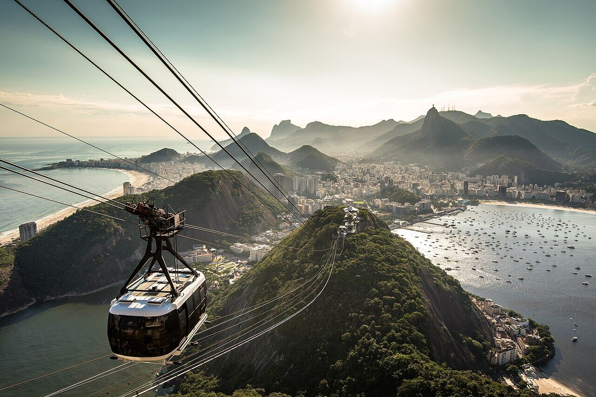
Pão de Açúcar
Urca
Suba de bondinho no fim da tarde para ver o dia virar noite lá de cima.
Cristo Redentor pelo Trem do Corcovado
Cosme Velho
O trajeto pela mata faz parte do passeio. Vá cedo para pegar menos fila.
Jardim Botânico
Jardim Botânico
Uma caminhada tranquila entre palmeiras imperiais, orquidário e bromeliário.
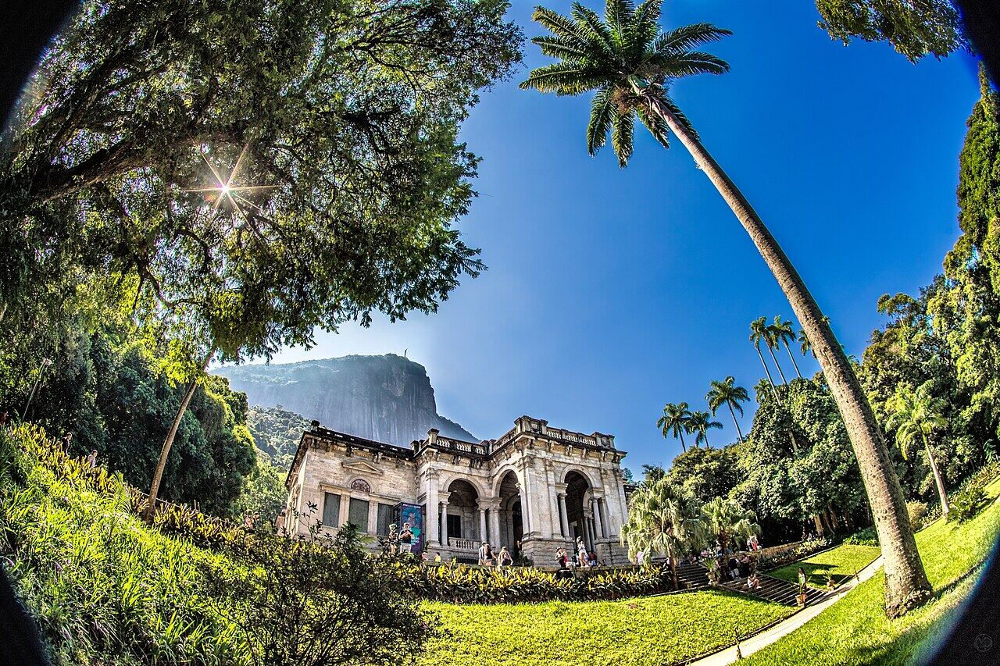
Parque Lage
Jardim Botânico
Tome um café da manhã no pátio do palacete com o Cristo ao fundo.
Santa Teresa
Santa Teresa
Ande no bondinho e visite o Parque das Ruínas e o Museu Chácara do Céu, com almoço num bistrô do bairro.

Centro histórico
Centro
O Real Gabinete Português de Leitura, a Confeitaria Colombo e a visita guiada ao Theatro Municipal cabem num mesmo roteiro.
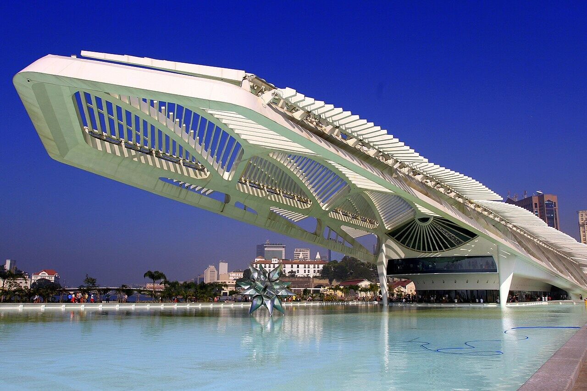
Praça Mauá
Centro / Porto
O Museu do Amanhã, o MAR e uma caminhada pelo Boulevard Olímpico ficam todos ali.
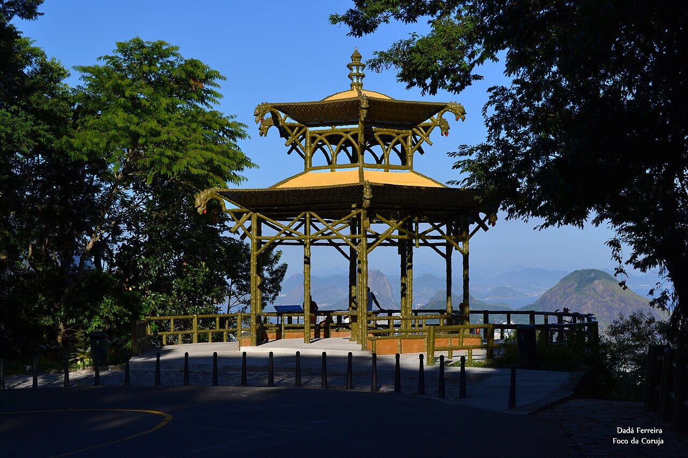
Floresta da Tijuca
Alto da Boa Vista
Vista Chinesa, Mesa do Imperador e Cascatinha Taunay, de carro ou com guia.

Pista Cláudio Coutinho e trilha do Morro da Urca
Urca
São trilhas leves, com mar e mata, e às vezes dá para ver micos.
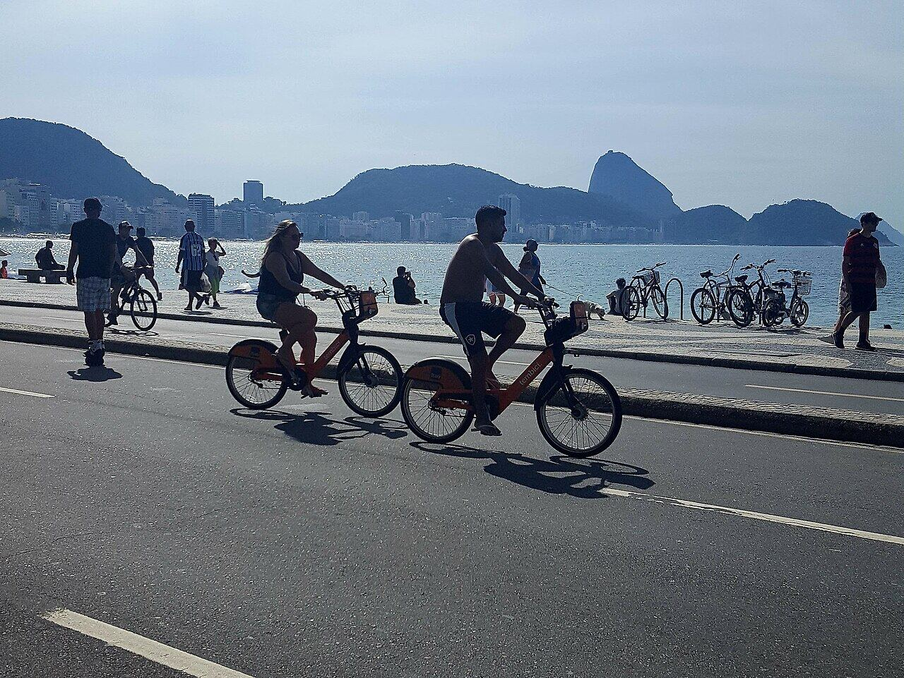
Bicicleta pela orla
Zona Sul
Pedale do Leblon ao Leme, ou dê a volta na Lagoa Rodrigo de Freitas.
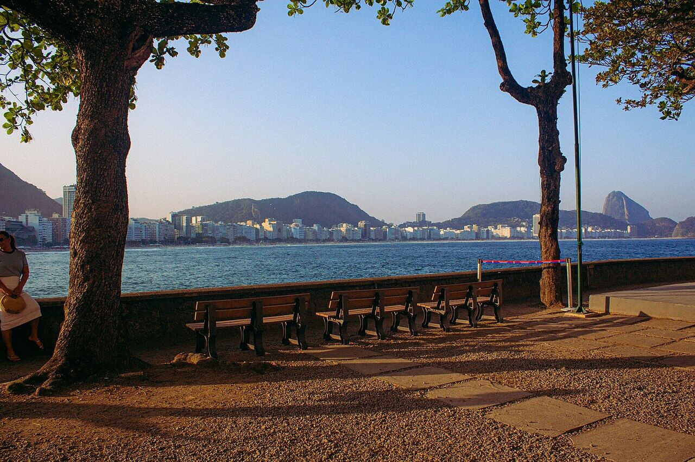
Forte de Copacabana
Copacabana
Tome café com vista para a praia inteira.

Feira Hippie de Ipanema
Ipanema
Artesanato aos domingos, depois uma caminhada até o Arpoador.
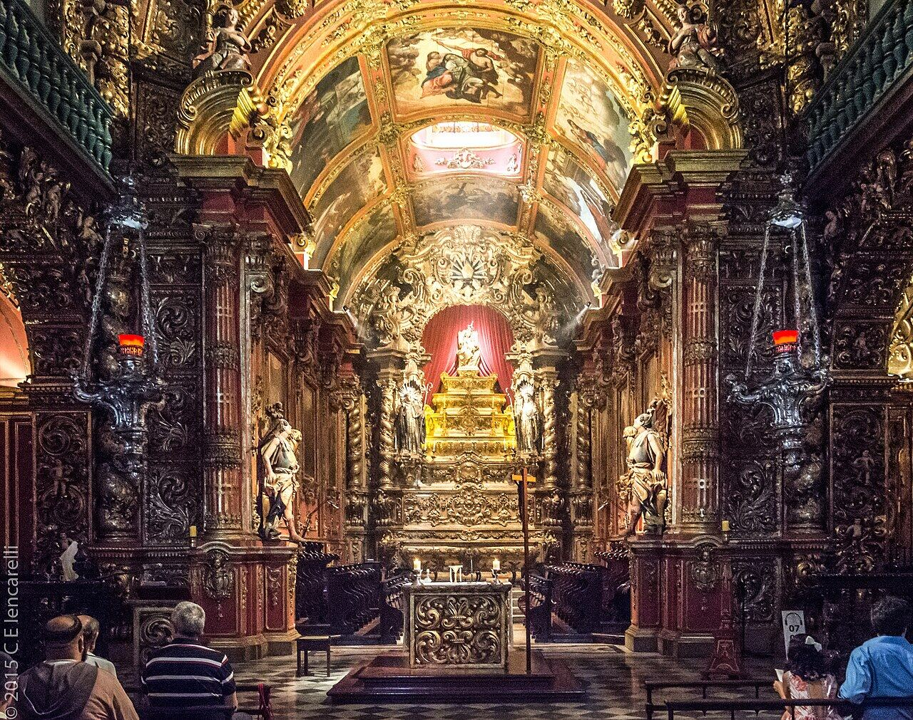
Mosteiro de São Bento
Centro novo
Um dos interiores barrocos mais bonitos do país. A missa de domingo de manhã tem canto gregoriano.
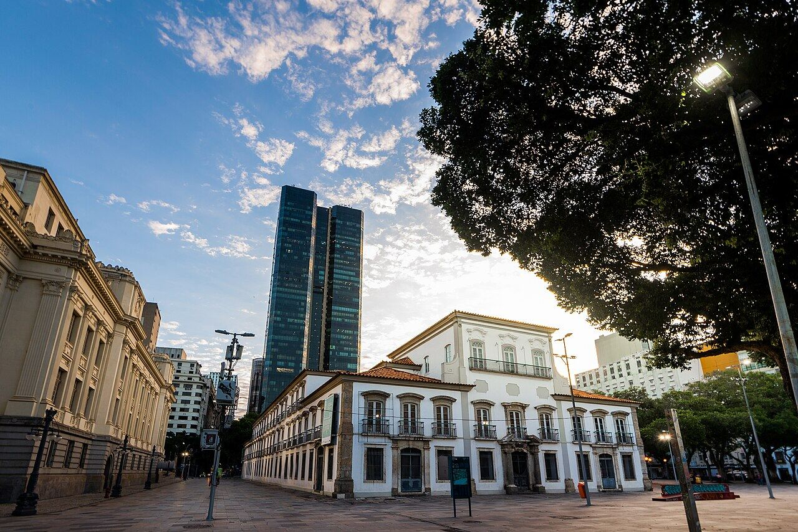
Praça XV, Paço Imperial e Arco do Teles
Centro novo
O Rio colonial em poucos quarteirões, fácil de emendar com o roteiro do Centro.

CCBB Rio
Centro novo
Exposições num prédio histórico, com café e livraria.

Escadaria Selarón e Arcos da Lapa
Lapa novo
Ficam no caminho para Santa Teresa e rendem ótimas fotos.
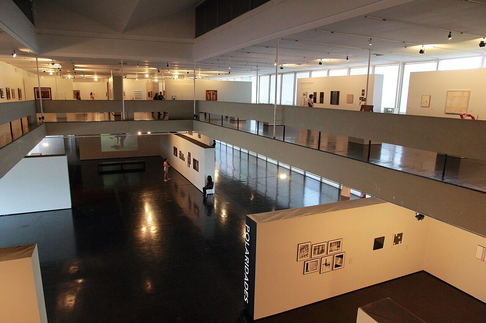
Aterro do Flamengo e MAM
Flamengo / Centro novo
Caminhada pelo paisagismo de Burle Marx até o Museu de Arte Moderna.

Parque da Catacumba
Lagoa novo
Trilha leve até um mirante sobre a Lagoa.

Chá da tarde no Copacabana Palace
Copacabana novo
Uma versão diurna do glamour do hotel.
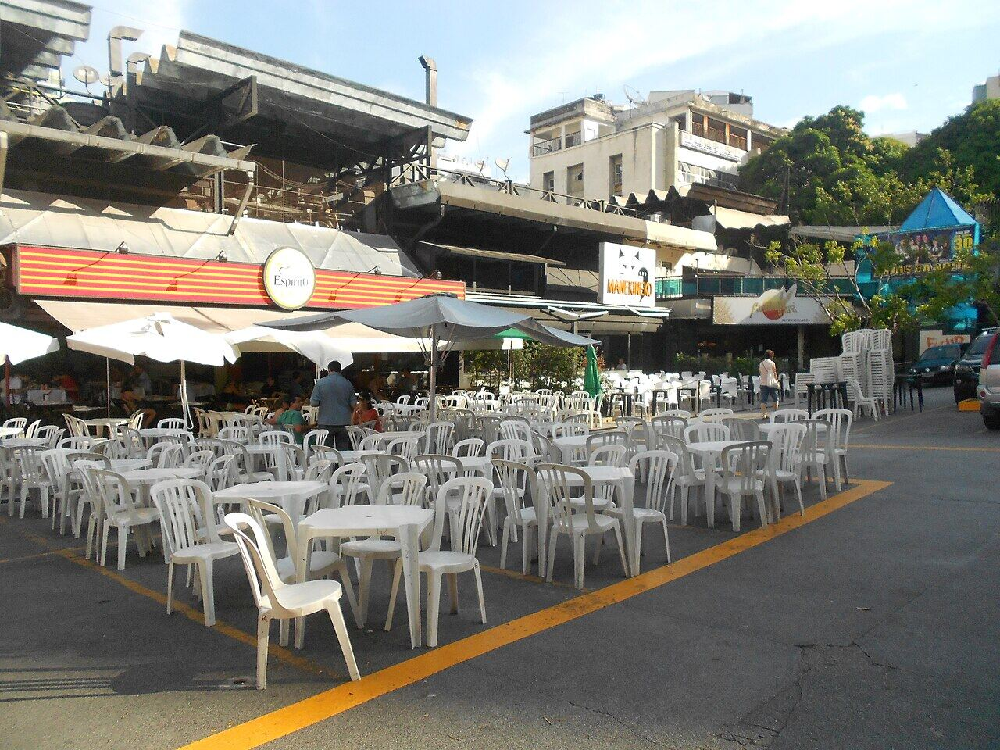
Cobal do Humaitá
Humaitá novo
Almoço ou petiscos ao ar livre, com o Cristo à vista.
De noite
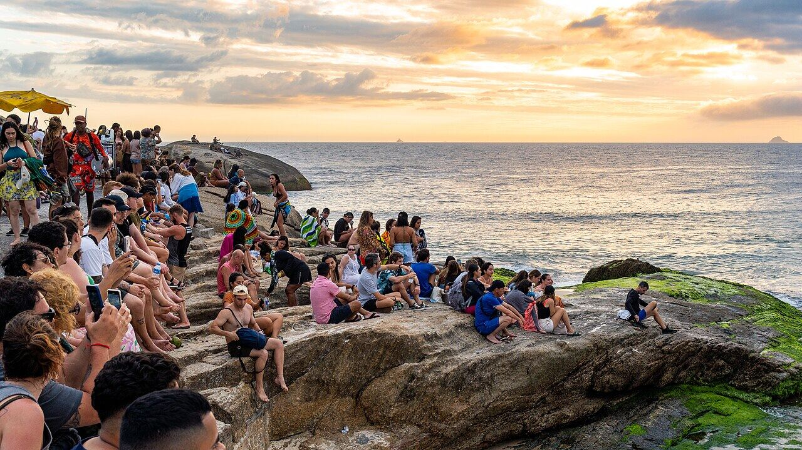
Pôr do sol no Arpoador
Ipanema
Os aplausos para o sol são uma tradição carioca.
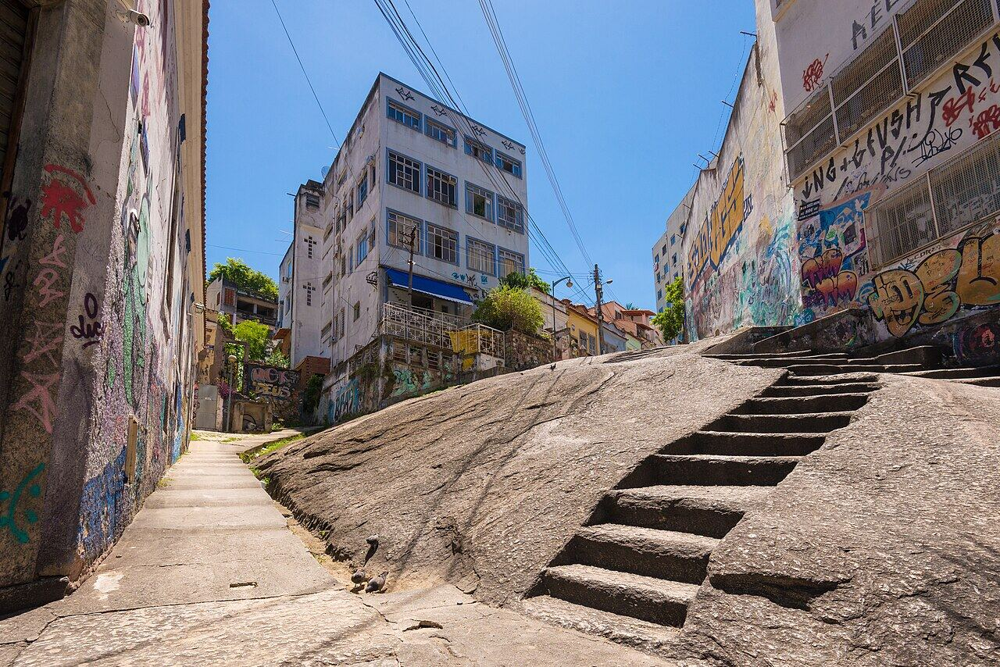
Samba da Pedra do Sal
Saúde
Roda de samba ao ar livre no berço do samba, às segundas e sextas.

Rio Scenarium
Lapa
Um casarão de antiguidades com samba e choro ao vivo.

Carioca da Gema
Lapa
Samba de raiz num ambiente mais intimista na Lapa.

Drinque no Copacabana Palace
Copacabana
Um clássico do glamour carioca, e dá para emendar num jantar.

Rooftops de hotéis
Ipanema, Copacabana, Santa Teresa
Drinques com vista de Ipanema, Copacabana ou Santa Teresa.

Jantar no Aprazível
Santa Teresa
Cozinha brasileira com vista da cidade iluminada.
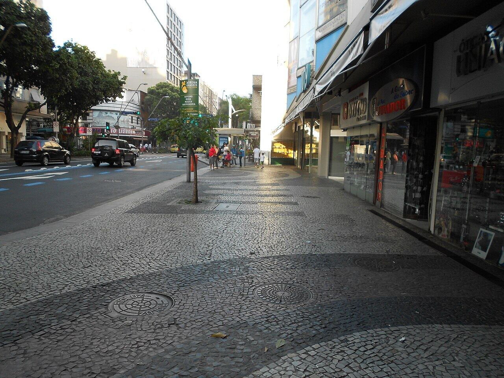
Botecos clássicos do Leblon
Leblon
Jobi e Bracarense: chope gelado e bolinho de bacalhau.
Quiosques da Lagoa Rodrigo de Freitas
Lagoa
Jantar ao ar livre com o espelho d'água iluminado.

Feira de São Cristóvão
São Cristóvão
Forró, comida nordestina e muita animação nas noites de fim de semana.

Bar do Gomes
Santa Teresa
Um boteco centenário com clima boêmio.

Bar Bukowski
Botafogo novo
A casa de rock mais tradicional do Rio, com bandas, DJs e karaokê.
Coordenadas Bar
Botafogo novo
Bandas de rock ao vivo de quinta a sábado, num clima mais de bar.
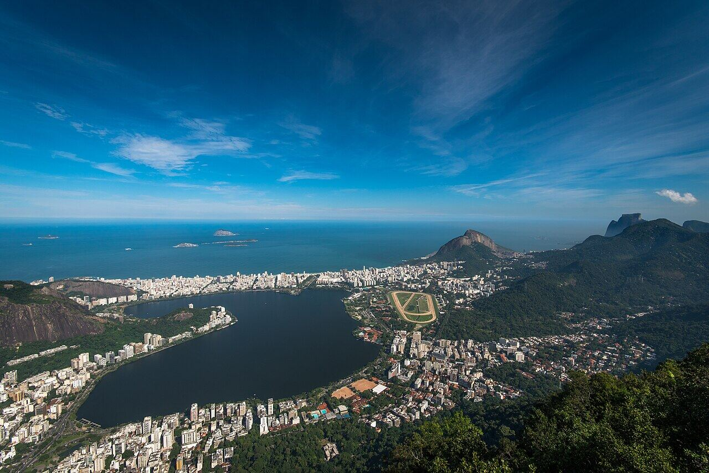
Bar Lagoa
Lagoa novo
Um clássico art déco à beira da Lagoa, com chope e comida alemã.

Bip Bip
Copacabana novo
Um bar minúsculo e lendário de roda de samba e choro.

Bar Luiz
Centro novo
Um dos bares mais antigos da cidade, com chope e salsichão.
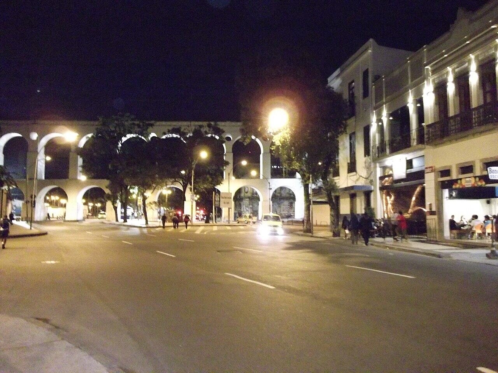
Nova Capela
Lapa novo
O cabrito com arroz de brócolis é tradição, ótimo para fechar a noite depois do samba.
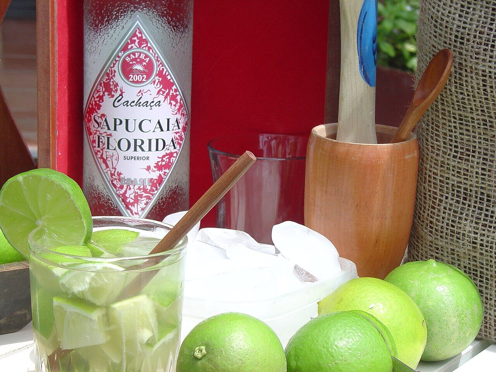
Academia da Cachaça
Leblon novo
Centenas de rótulos e escondidinhos.
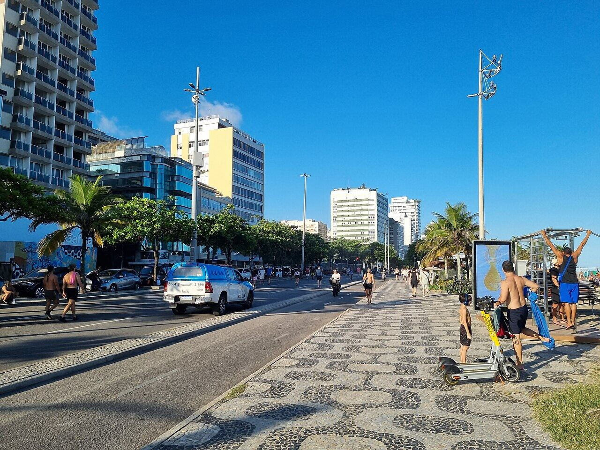
Astor
Ipanema novo
Um bar de frente para o mar, com ótimos drinques.

Fogo de Chão de Botafogo
Botafogo novo
Jantar com vista para o Pão de Açúcar iluminado.
Nenhum passeio com esse filtro. Escolham outro filtro ou limpem a busca.